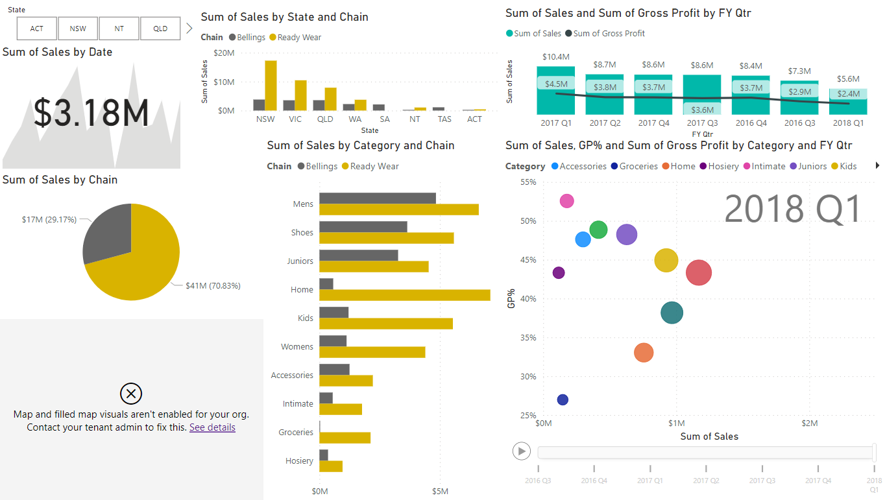

Özgür Polat
Python | Data Analysis
As a Python Developer and Data Analyst, I specialize in crafting robust back-end components, building scalable
Python applications, and developing custom Odoo modules tailored to client needs. I actively engage with
stakeholders to understand requirements and deliver secure, high-performing solutions.
With more than 3 years of experience in software development and over 5 years in data analysis and academic
research, I bring a unique combination of analytical rigor and practical engineering skills. I excel at interpreting
complex datasets, conducting statistical tests, and generating actionable insights. Holding a PhD in Economics, I
apply a data-driven mindset to solve real-world problems across diverse industries.
I thrive in fast-paced, dynamic environments and embrace lifelong learning with a passion for creative innovation
and solving complex challenges. Known for reliability, attention to detail, and a commitment to excellence, I
consistently deliver results that exceed expectations. My interpersonal and organizational strengths support
effective collaboration and contribute meaningfully to team success and organizational goals.
Data of S&P 500 were obtained by creating an API token and value of a portfolio was analyzed to determine each S&P 500 constituent that should be purchased to get an equal-weight version of the index fund, an investing strategy was built that selects the 50 stocks with the highest price momentum and the best value metrics, and recommended trades for an equal-weight portfolio of these 50 stocks were calculated by using Python and its libraries such as Pandas, SciPy and Numpy.
Biodiversity in National Parks

This was a portfolio project phase of Codecademy Data Science Bootcamp. Descriptive statistics and data visualization techniques, as well as Exploratory Data Analysis (EDA), were employed to understand the data better through Pandas, Numpy, Matplotlib and Seaborn. Statistical inference was also be used to test if the observed values were statistically significant by using Scypi.

Tableau is an interactive data visualization software.
It is a great and versatile tool for visualizing data.
My tableau dashboard projects can be found on my Tableau Public profile.
Tableau Public is a free platform to explore, create, and publicly share data visualizations online.

In this dashboard project the sales in detail such as regional and time aspects were analyzed and visualized. The first page of the dashboard contains the most important KPI’s. The second page examines the sales in different regions. You can navigate through the dashboard using the menu on the left of each page.